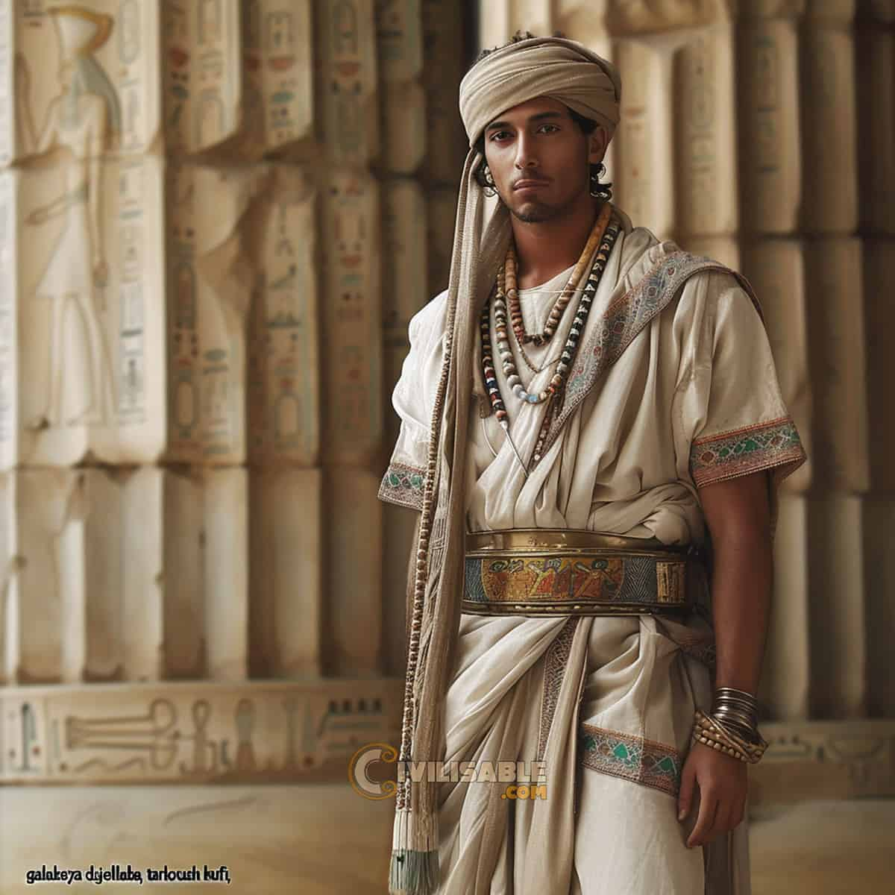
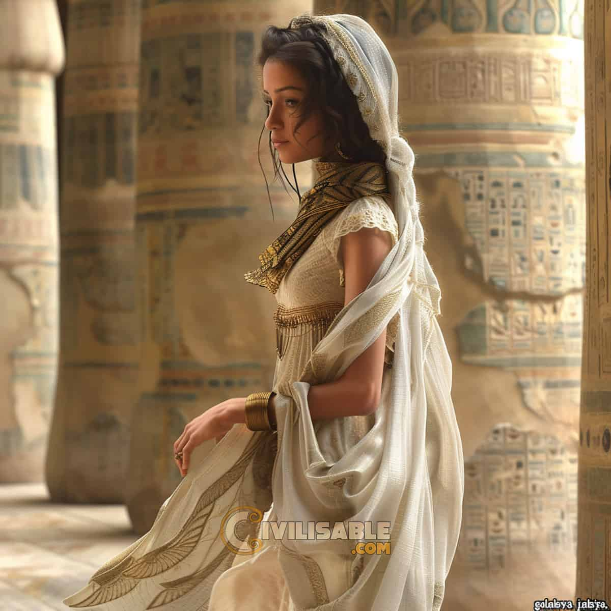
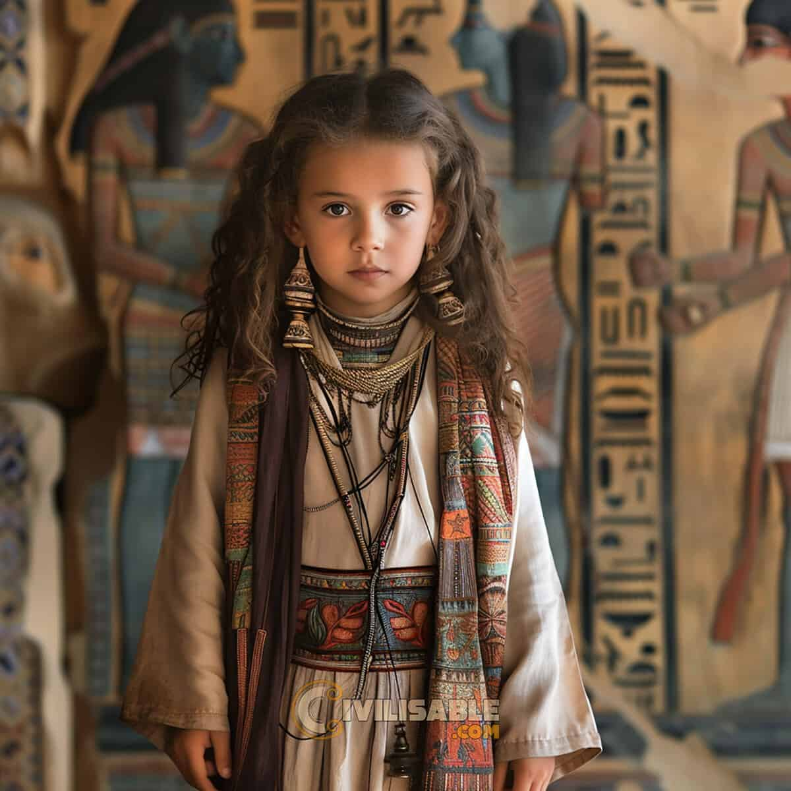
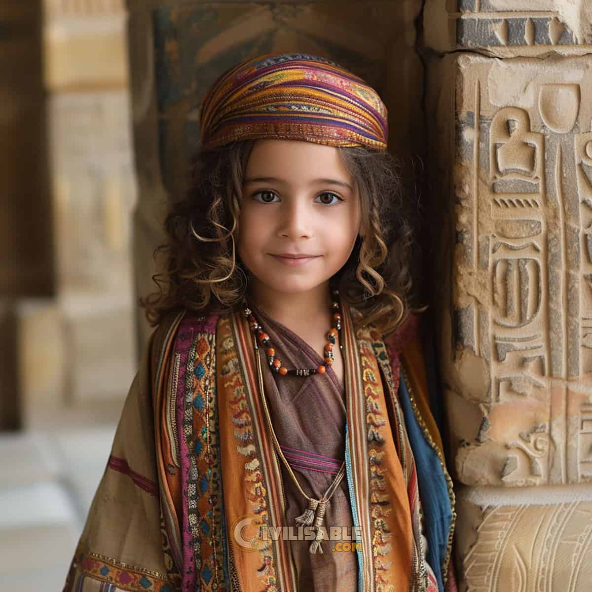

➤ Egyptian Traditional Clothing for Men
Traditional attire for ancient Egyptian men encompasses a range of styles, each reflecting the nation’s rich history. The iconic Galibaya, worn across ancient Egypt, epitomizes the country’s identity. Adorned with kaftans and crafted from striped fabrics such as silk or cotton, these garments offer both practicality and elegance.
Over time, ancient Egyptian men’s clothing evolved from the wraparound skirts of the XVII BC to the shorter skirts of the Middle Kingdom (1600 BC). Later innovations in 1420 BC introduced light tunics and blouses with sleeves, further enriching the sartorial landscape of ancient Egypt.
➤ Egyptian Traditional Clothing for Women
Ancient attire for women in Egypt reflects practicality and cultural significance. Layered and loosely fitted garments prevail, influenced by religious observances and climatic conditions. Modesty norms require covering most body parts, including the head per Islamic traditions.
Throughout history, women have worn variations of the Gallibaya, featuring long, baggy shirts tailored to their shape. In ancient times, Kalasiris dresses were favored for their conservative style. These dresses, often adorned with beading or feathers, were held up by straps extending from the waist to the breast.
Options for layering included shawls, capes, or robes, with shawls typically crafted from fine cloth and pleated for elegance.
In traditional Egyptian culture, children’s attire reflects practicality and cultural norms. At six years old, it becomes customary for them to don coats, shielding against chilly weather. Hairstyles often include sidelocks and unshaved lengths of hair, preserving tradition.
While clothing may not always be worn, some children adorn themselves with jewelry like ankle ties, bracelets, or hats, echoing their elders’ styles. As they grow, children often emulate parental attire, ensuring the continuity of Egyptian fashion through generations.
 